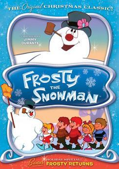
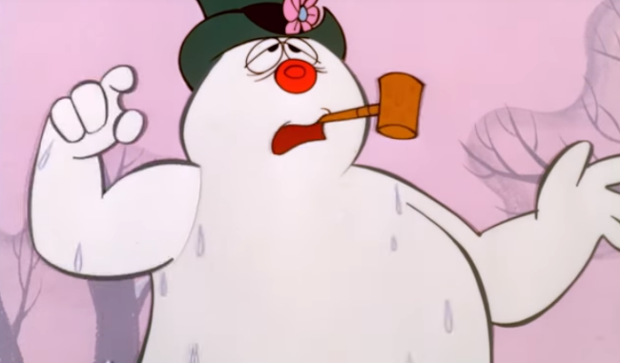
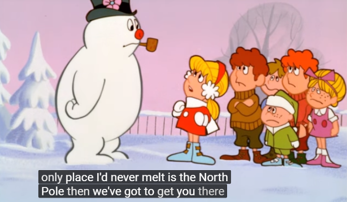
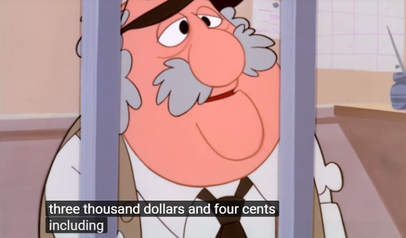
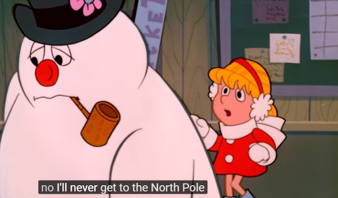
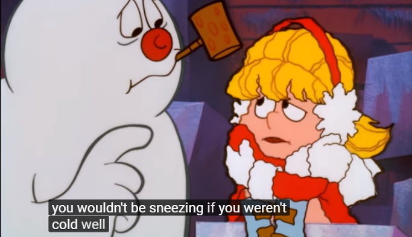
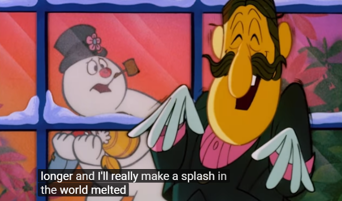
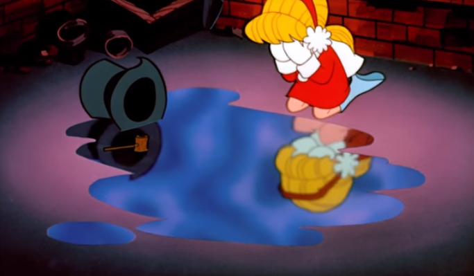
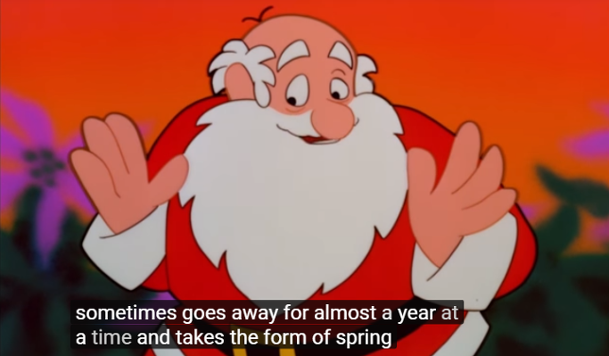

Sia의 "Snowman" 가사 해석 - 눈사람 프로스티의 추억
게시: 2017-12-28T22:48:29+09:00
제가 어릴 때 흑백 TV로 본 눈사람 관련 크리스마스 특집 만화 영화가 있었습니다. 하도 어릴 때 봐서 내용이 잘 기억은 나지 않습니다만, 마법으로 생명을 얻은 눈사람이 결국 녹아서 죽음을 맞이하는 내용이었습니다. 나름 굉장히 슬픈 내용이라서 제가 어린 나이에 만화 영화 보면서 막 울었던 것이 기억납니다.
오늘 라디오를 듣다보니 처음 듣는 노래인데, 드문드문 귀에 들리는 가사가 왠지 그 만화 영화가 생각나는 내용이었습니다. 라디오 DJ가 Sia의 Snowman이라는 곡이라고 하길래, 곧장 구글링해보니 정말 그렇더군요. 내친 김에 그 중절모를 쓴 눈사람 관련 내용을 검색해보니, 제가 어린 시절 본 만화 영화의 제목은 'Frosty the Snowman'이고, 내용은 마법 중절모로 생명을 얻은 눈사람 프로스티와 초딩 소녀가 눈사람이 녹지 않도록 북극으로 떠나는 모험 이야기였습니다.

Sia라는 싱어송라이터가 만든 이 노래 가사는 이 'Frosty the Snowman'이라는 만화 영화를 모른다면 잘 이해가 안 갈 수도 있습니다. 가령 "A puddle of water can't hold me close"라는 부분은 프로스티가 녹아서 물구덩이가 되는 부분을 보지 못했다면 이해도 안가고 그 슬픔을 느낄 수도 없는 부분이지요. 또 "let's hit the North Pole and live happily"라는 부분이 소녀가 자기 생명을 버리고서라도 프로스티를 살리려는 눈물겨운 자기 희생을 함축하는 가사라는 것도 이해할 수 없지요.
Sia는 왜 가사를 만들 때 사람들이 대부분 이 만화 영화를 봤을거라고 가정했을까요 ? 'Frosty the Snowman'은 CBS라는 미국 방송국에서 TV 용으로 1969년에 제작한 것인데, 아주 기념비적인 작품성이 있는 크리스마스 영화이기 때문에 CBS에서는 이걸 연말연시에 해마다 방영한다고 합니다.
기념비적인 작품성이라고 가히 칭할 만한 것이, 이 짧은 만화 영화에서는 사회와 인생 철학에 대해 많은 것을 다룹니다. 가령 프로스티에게 생명을 주는 역할을 하는 중절모는 원래 어느 3류 마술사의 것인데, 자신의 모자에 마법력이 있다는 것을 알자 그 마술사는 당연히 그 모자를 되찾으려 합니다. 많은 돈을 벌 수 있을테니까요. 그러나 아이들은 소유권의 절대성보다는 생명이 더 소중하다고 여기고 마술사에게 모자를 돌려주지 않습니다 ! 아마 레이건이나 트럼프 시대에는 절대 나올 수 없는 사악한 빨갱이 사상을 가진 만화 영화인 셈이지요.

(태어나자마자 몸이 조금씩 녹고 있다는 것을 느끼는 프로스티)

(생명을 구할 수 있는 유일한 장소는 북극 !)
게다가 이 만화에서, 프로스티는 태어나자마자 곧 자신의 죽음에 대해 걱정합니다. 이는 모든 생명체의 공통된 숙명이긴 하지만, 애들 보는 만화치고는 굉장히 무거운 주제이지요 ? 그 해법으로 제시된 것이 기차를 타고 북극으로 가자는 것인데, 역에 도착한 소녀와 프로스티가 천진난만하게 '북극행 기차표 주세요'라고 티켓 오피스에 부탁하자 나오는 대답은 '세금 포함해서 3천달러'라는 무시무시하고 현실적인 액수였습니다. 프로스티와 소녀는 좌절합니다. 그러나 자본주의와 그를 지탱하는 법률에 굴복하지 않고 과감히 냉동 화차에 무전 승차 하여 북극으로 출발합니다. 하지만 자본주의는 아름다운 이타심을 가만 놔두지 않습니다. 사유 재산권은 생명보다 더 소중하고 절대적인 것이니까요 !

(생명을 구하는데도 돈이 듭니다. 북극행 기차표값은 3천 달러하고도 4센트, 세금 포함한 가격입니다. 1969년 당시로서는 엄청난 거금이지요.)

(자본주의에 멍드는 동심...)

(남을 위하는 일에는 희생이 따릅니다. 그러나 서로가 서로를 위한다면 극복할 수 있을까요 ?)

(프로스티는 소녀의 목숨을 구하기 위해 자신의 몸이 녹는 것을 무릅쓰고 온실에 들어가고, 3류 마법사는 자신의 정당한 소유물인 중절모를 되찾기 위해 온실의 문을 잠가버리고 웃음 짓습니다. "널 녹여버린 뒤 내 모자를 되찾겠다 !" 자본주의적으로 매우 합리적인 결정이지요. 그러나....)

(프로스티를 구하기 위해 산타 할아버지가 오시지만 이미 프로스티는... 제가 어릴 때 이 장면 보고 펑펑 울었던 것이 기억납니다. 줄거리는 기억나지 않지만요.)

(산태 할아버지는 울고 있는 소녀에게 설명합니다. "프로스티는 크리스마스 눈으로 만들어진 것이라서 완전히 없어지는 일은 없단다, 1년 쯤 멀리 가있기는 하지만 봄과 여름의 비로 변했다가 겨울에 다시 돌아온단다..." 사실 이 만화 영화는 크리스마스 영화이긴 하지만 이 부분은 상당히... 불교의 윤회 사상과 일맥상통하는 내용입니다. 진짜 기독교 영화라면 하늘에서 성령이 내려와 프로스티가 구원을 받고 죽음에서 되살아나 영원히 천국에서 영원히 영생을 누려야 합니다. 실제로 산타 할아버지가 설명은 저렇게 해도 결국 프로스티를 되살려서 썰매에 태우고 북극으로 갑니다. 다음 크리스마스 때 다시 찾아온다는 설명과 함께요.)
눈사람은 유한한 존재라는 점에서 사람과 비슷합니다. 아무리 젊고 아름다운 사람이라도 결국 늙어서 죽게 되지요. 사랑도 마찬가지입니다. 아무리 뜨거운 사랑이라도 언젠가는 시들해지고, 결국 사그라들게 됩니다. 하지만 눈사람이든 사람이든 연인 간의 사랑이든, 유한하다고 해서 의미없거나 하찮은 것은 아닙니다. 오히려 짧은 순간만 존재할 수 있기 때문에 더 의미있고, 더 애틋하고, 더 소중한 것입니다. 시간은 가난하고 천한 자에게나 부유하고 귀한 자에게나 공평하게 주어지는 것이자, 또 살아있는 모든 것에게 있어 가장 소중한 것이기도 합니다. 우리도 매 순간순간을 후회없이 사용해야지요.
'Frosty the Snowman'은 아래 유튜브에 전체 영상이 다 올라와 있습니다. 영어 자막도 있는, 25분 정도 길이의 영상입니다. 자녀분들 영어 공부에도 좋을 것입니다.

"Frosty the Snowman 풀 영상이 담긴 유튜브 클릭"
'Snowman'은 매우 최근인 2017년 11월에 발표된 것으로, 이 곡을 만든 호주 출신 가수 시아(Sia)는 만화 영화 주토피아의 주제곡 'Try Everything'을 작사작곡한 싱어송라이터입니다. 음악은 아래 유튜브에서 감상하실 수 있습니다.

"Sia의 Snowman 음악 감상을 위한 유튜브 클릭"
Don't cry, snowman, not in front of me
Who'll catch your tears if you can't catch me, darling
If you can't catch me, darling
울지말아요, 눈사람, 내 앞에선 그러지 말아요
당신이 날 붙잡지 못하면, 누가 당신 눈물을 닦아주겠어요
당신이 날 붙잡지 못하면요
Don't cry, snowman, don't leave me this way
A puddle of water can't hold me close, baby
Can't hold me close, baby
울지말아요, 눈사람, 이런 식으로 날 떠나진 말아요
물구덩이로 변하면 날 꼭 안아줄 수 없쟎아요
날 꼭 안아줄 수 없쟎아요
I want you to know that I'm never leaving
Cause I'm Mrs. Snow, 'till death we'll be freezing
난 절대 떠나지 않는다는 걸 알아줬으면 해요
난 눈사람 부인이쟎아요 죽을 때까지 우리 얼어붙자고요
Yeah, you are my home, my home for all seasons
So come on let's go
그래요, 당신이 내 집이고, 사계절 나의 집이에요
그러니 우리 어서 가요
Let's go below zero and hide from the sun
I love you forever where we'll have some fun
영하로 내려가 태양으로부터 숨자고요
당신을 영원히 사랑할 거에요 재미나게 살아요
Yes, let's hit the North Pole and live happily
Please don't cry no tears now
It's Christmas, baby
그래요, 북극으로 가서 행복하게 살아요
제발 지금은 울지 말아요
지금은 크리스마스쟎아요
My snowman and me, yea
My snowman and me
Baby
내 눈사람 그리고 나, 그래요
내 눈사람 그리고 나
내 사랑
Don't cry, snowman, don't you fear the sun
Who'll carry me without legs to run, honey
Without legs to run, honey
울지 말아요 눈사람, 태양을 겁내지 말아요
누가 달릴 다리가 없어도 날 업어주겠어요
달릴 다리가 없어도요
Don't cry, snowman, don't you shed a tear
Who'll hear my secrets if you don't have ears, baby
If you don't have ears, baby
울지 말아요 눈사람, 눈물 흘리지 말아요
당신에게 귀가 없다면 누가 내 비밀을 들어주겠어요
당신에게 귀가 없다면요
I want you to know that I'm never leaving
Cause I'm Mrs. Snow, 'till death we'll be freezing
난 절대 떠나지 않는다는 걸 알아줬으면 해요
난 눈사람 부인이쟎아요 죽을 때까지 우리 얼어붙자고요
Yeah, you are my home, my home for all seasons
So come on let's go
그래요, 당신이 내 집이고, 사계절 나의 집이요
그러니 우리 어서 가요
Let's go below zero and hide from the sun
I love you forever where we'll have some fun
영하로 내려가 태양으로부터 숨자고요
당신을 영원히 사랑할 거에요 재미나게 살아요
Yes, let's hit the North Pole and live happily
Please don't cry no tears now
It's Christmas, baby
그래요, 북극으로 가서 행복하게 살아요
제발 지금은 울지 말아요
지금은 크리스마스쟎아요
My snowman and me, yea
My snowman and me
Baby
내 눈사람 그리고 나, 그래요
내 눈사람 그리고 나
내 사랑